Multi-Object Discovery by Low-Dimensional Object Motion
ICCV 2023
|
|
|
|
|
|
|
From a single image, we predict a segmentation mask and a disparity map using two separate networks. Based on these predictions, we construct the bases for the space of the possible optical flows for distinctly moving regions on the image. Each region is represented with a separate basis. Given optical flow as input, we project it into the linear span of the constructed bases and use the distance between the input flow and the projected flow to supervise depth and segmentation. During inference, our networks can be used to predict depth and segmentation from a single image. |
Recent work in unsupervised multi-object segmentation shows impressive results by predicting motion from a single image despite the inherent ambiguity in predicting motion without the next image. On the other hand, the set of possible motions for an image can be constrained to a low-dimensional space by considering the scene structure and moving objects in it. We propose to model pixel-wise geometry and object motion to remove ambiguity in reconstructing flow from a single image. Specifically, we divide the image into coherently moving regions and use depth to construct flow bases that best explain the observed flow in each region. We achieve state-of-the-art results in unsupervised multi-object segmentation on synthetic and real-world datasets by modeling the scene structure and object motion. Our evaluation of the predicted depth maps shows reliable performance in monocular depth estimation. |
Results
Synthetic Datasets
Real Datasets
|
 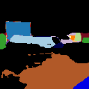
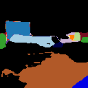

 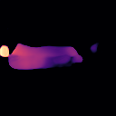
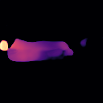
 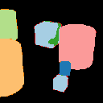
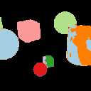
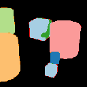
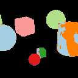
 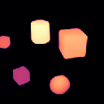
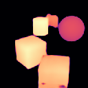
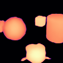
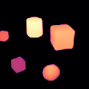
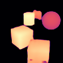
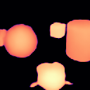


BibTeX
@InProceedings{safadoust2023ICCV,
author = {Safadoust, Sadra and Güney, Fatma},
title = {Multi-Object Discovery by Low-Dimensional Object Motion},
booktitle = {Proceedings of the IEEE/CVF International Conference on Computer Vision (ICCV)},
year = {2023},
}We would like to thank Richard Tucker and Richard Strong Bowen for providing technical details about the Dimensions of Motion paper. Sadra Safadoust was supported by KUIS AI Center and UNVEST R&D Center. |
| The website template was borrowed from nerfstereo. |